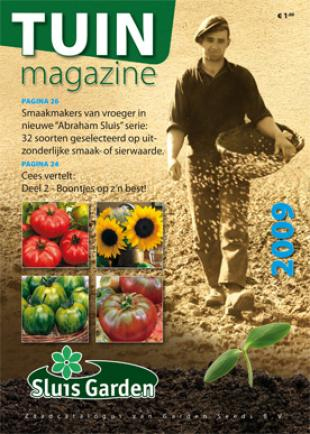

Fa Screever.
Wij zijn leverancier van diervoeders, mais, granen, stalstrooisels, meststoffen, tuinzaden en tuinbenodgdheden. Alle producten worden geleverd onder de geldende GMP+ Certificering. Dit is een waarborg voor de kwaliteit en zuiverheid van de producten, welke jaarlijks wordt gecontroleerd. Ook beschikken wij over het CDG certificaat (Certificatie Distributie in Gewasbeschermingsmiddelen).
